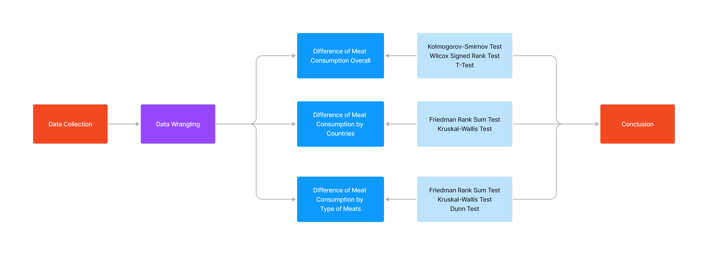

Nonparametric Analysis of Meat Consumption
March 2022 - May 2023 | By Dongsuk Jeong
Purpose
• Investigate the difference of meat consumption by countries and by type of meats between 2019 and 2022
Methodology
Data Collection & Wrangling
• Collected the data from Kaggle
• Original Dataset consists with Country, Type of Meats, Measurement, Year, and Value of Meat Consumption
• Constructed the seperate sub-datasets for the three different approachs
Analysis
1. Difference of Meat Consumption between 2019 and 2023 Overall
• In this approach, the dataset consists of meat consumption of 2019 and meat consumption of 2022
• Conducted the Kolmogorov-Smirnov test to see if the difference of meat consumption fit to normal distribution
• The difference of meat consumption did not hold normal distribution, but holded symmetry assumption
• Conducted the Wilcox Signed Rank test to see if there are statistically difference in meat consumption between 2019 and 2022
• Rejected the null hypothesis with p-value of 1.044e-11 based on the result fo Wilcox test, which indicates that there are significantly difference in meat consumption between 2019 and 2022
• Conducted T test just to see if it showed the same result with Wilcox Test, and the result of T test also showed the same result with Wilcox test with p-value of 3.749e-10
2. Difference of Meat Consumption between 2019 and 2023 by Countries
• In this approach, the dataset consists of countries, average meat consumption of 2019, average meat consumption of 2022, and average difference of meat consumption between 2019 and 2022
• Conducted Friedman's test to see the difference of meat consumption by countries since year is considered as a block in the dataset
• As the result of Friedman's test, rejected the null hypothesis with p-value of 0.003286, which means that there are at least two countries having a statistically significant difference among 39 countries
• Conducted Kruskal-Wallis rank sum test with only taking account of difference of meat consumption and countries to see the statistical difference
• From the result of Kruskal-Wallis test, failed to reject the null hypothesis with p-value of 0.2912, which means there are no statistically significant difference by type of meats.
This would be happen because the relationship between the difference of meat consumption and countires violated the independent assumption
• Used ggplot to show the difference by countries. On the plot, location 1 indicates the Australia, location 2 indicates Canada, etc
• China, location 12, showed the most difference of meat consumption among 39 countries
3. Difference of Meat Consumption between 2019 and 2023 by Type of Meats
• In this approach, the dataset consists of countries, difference of beef consumption between 2019 and 2022, difference of pig consumption, difference of poultry consumption, and difference of sheep consumption
• Conducted Friedman's test to see the difference of meat consumption by type of meats between 2019 and 2022 and rejected the null hypothesis with p-value of 2.2e-16
• Conducted the Kruskal-Wallis test to see if the relationship between the difference of meat consumption and type of meats holds the independent assumption well or not
• As a result, rejected the null hypothesis with p-value of 4.526e-05, which means that there are statistically significant difference by type of meats and it holds independent assumption
• Followed by the result of Kruskal-Wallis test, conducted the Dunn test for the multiple comparison between type of meats
• From the Dunn test, it indicated that there are statistically significant difference between sheep and pig and difference between sheep and poultry
• Used ggplot to show the difference by different type of meats in detail.

Conclusion
• Found out that there are statistically significant difference of meat consumption both by countires and by type of meats
• China showed the most difference of meat consumption between 2019 to 2022 among 39 countries
• The difference of consumption between sheep and pig and the difference of consumption between sheep and poultry showed the statistically significant difference